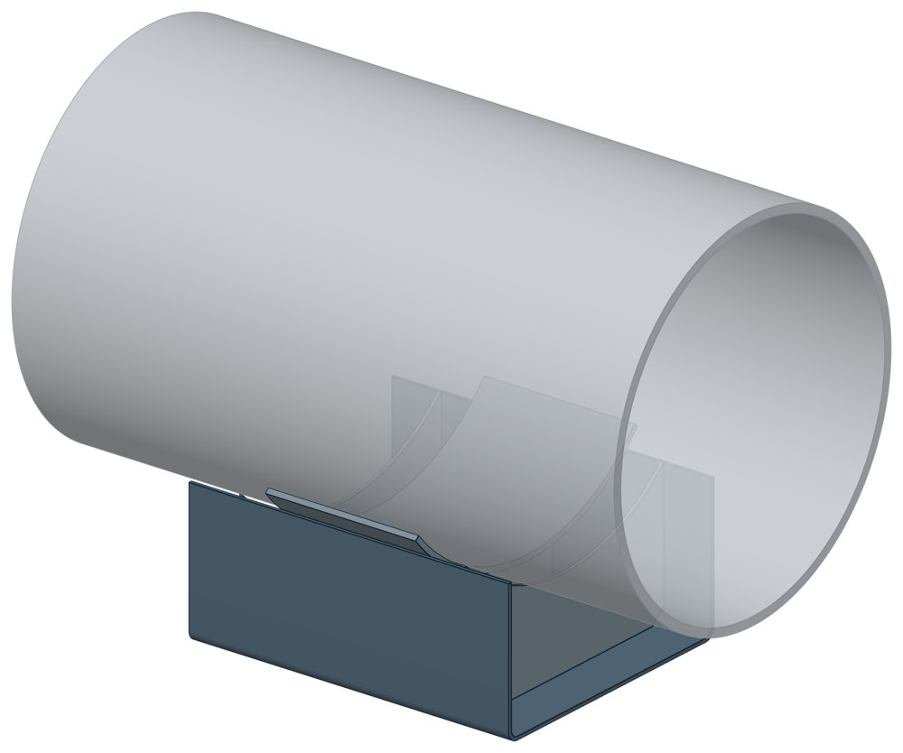
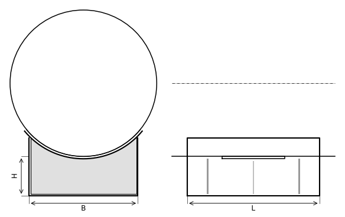

Опора скользящая приварная ТС-624
Скользящая приварная опора для средних и больших диаметров: труба лежит в гнутой подушке, подушка стоит на П-образной скобе с рёбрами. Высота от опорной конструкции до низа трубы — 100, 150 или 200 мм.

- Диаметр трубы Dн
- 194–1420 мм
- Документ
- Серия 5.903-13 вып. 8-95
- Исполнений
- 117
- Вертикальная нагрузка
- до 600 кН
- Масса
- 4–137 кг
- 3D-модели
- у всех исполнений
Применение и монтаж
Назначение: где применяется
Трубопроводы тепловых сетей Dн 194–1420 мм. Вертикальная нагрузка от 22 до 600 кН — по диаметру. Скользящие опоры применяют при всех способах прокладки и для всех диаметров (СП 124.13330.2012, п. 10.34). При подземной прокладке в районах вечномёрзлых грунтов высота — не менее 150 мм (п. 16.25).
Монтаж: как устанавливается
Подушку приваривают к трубе. Основание скобы свободно лежит на опорной конструкции и перемещается по ней вместе с трубой. Длину выбирают по тепловому перемещению: 170 мм — до 90 мм, 340 мм — до 250 мм, 680 мм — до 600 мм.
Отличия от соседних типов
Диаметр до 159 мм — ТС-623. Варить к трубе нельзя — хомутовая ТС-626 или бугельная ТС-627 на том же корпусе. Катковые опоры на тех же диаметрах: ТС-630 для Dн 720–1420 мм, двухъярусная ТС-628 от 194 мм. Нужна электроизоляция — диэлектрическая плита ТС-632 под основание.
Габаритная схема ТС-624

Состав комплекта на одну опору
| Скоба гнутая | 1 шт. |
| Подушка | 1 шт. |
| Ребро с вырезом под подушку | 2 шт. |
Таблица исполнений ТС-624
| Обозначение | Код ПРОМБУРГ | Dнмм | Вертикальная нагрузкакН | Ширина Вмм | Высота Нмм | Высота Н1мм | Длина Lмм | Массакг | 3D |
|---|---|---|---|---|---|---|---|---|---|
| ТС-624.000 | ПБ-624-0194-1 | 194 | 22 | 180 | 100 | 148 | 170 | 4 | 3D |
| ТС-624.000-001 | ПБ-624-0194-2 | 194 | 22 | 180 | 150 | 198 | 170 | 5 | 3D |
| ТС-624.000-002 | ПБ-624-0194-3 | 194 | 22 | 180 | 200 | 248 | 170 | 6 | 3D |
| ТС-624.000-003 | ПБ-624-0219-1 | 219 | 22 | 180 | 100 | 136 | 170 | 5 | 3D |
| ТС-624.000-004 | ПБ-624-0219-2 | 219 | 22 | 180 | 150 | 186 | 170 | 6 | 3D |
| ТС-624.000-005 | ПБ-624-0219-3 | 219 | 22 | 180 | 200 | 236 | 170 | 7 | 3D |
| ТС-624.000-006 | ПБ-624-0273-1 | 273 | 22 | 180 | 100 | 126 | 170 | 5 | 3D |
| ТС-624.000-007 | ПБ-624-0273-2 | 273 | 22 | 180 | 150 | 176 | 170 | 6 | 3D |
| ТС-624.000-008 | ПБ-624-0273-3 | 273 | 22 | 180 | 200 | 226 | 170 | 7 | 3D |
| ТС-624.000-009 | ПБ-624-0325-1 | 325 | 70 | 280 | 100 | 165 | 170 | 8 | 3D |
| ТС-624.000-010 | ПБ-624-0325-2 | 325 | 70 | 280 | 150 | 216 | 170 | 10 | 3D |
| ТС-624.000-011 | ПБ-624-0325-3 | 325 | 70 | 280 | 200 | 265 | 170 | 11 | 3D |
| ТС-624.000-012 | ПБ-624-0377-1 | 377 | 70 | 280 | 100 | 152 | 170 | 9 | 3D |
| ТС-624.000-013 | ПБ-624-0377-2 | 377 | 70 | 280 | 150 | 202 | 170 | 9 | 3D |
| ТС-624.000-014 | ПБ-624-0377-3 | 377 | 70 | 280 | 200 | 252 | 170 | 10 | 3D |
| ТС-624.000-015 | ПБ-624-0426-1 | 426 | 70 | 280 | 100 | 142 | 170 | 5 | 3D |
| ТС-624.000-016 | ПБ-624-0426-2 | 426 | 70 | 280 | 150 | 192 | 170 | 13 | 3D |
| ТС-624.000-017 | ПБ-624-0426-3 | 426 | 70 | 280 | 200 | 242 | 170 | 15 | 3D |
| ТС-624.000-018 | ПБ-624-0480-1 | 480 | 125 | 380 | 100 | 174 | 170 | 13 | 3D |
| ТС-624.000-019 | ПБ-624-0480-2 | 480 | 125 | 380 | 150 | 224 | 170 | 19 | 3D |
| ТС-624.000-020 | ПБ-624-0480-3 | 480 | 125 | 380 | 200 | 274 | 170 | 22 | 3D |
| ТС-624.000-021* | ПБ-624-0530-1 | 530 | 125 | 380 | 100 | 162 | 170 | 16 | 3D |
| ТС-624.000-022* | ПБ-624-0530-2 | 530 | 125 | 380 | 150 | 212 | 170 | 19 | 3D |
| ТС-624.000-023* | ПБ-624-0530-3 | 530 | 125 | 380 | 200 | 262 | 170 | 21 | 3D |
| ТС-624.000-024* | ПБ-624-0630-1 | 630 | 125 | 380 | 100 | 148 | 170 | 17 | 3D |
| ТС-624.000-025* | ПБ-624-0630-2 | 630 | 125 | 380 | 150 | 198 | 170 | 20 | 3D |
| ТС-624.000-026* | ПБ-624-0630-3 | 630 | 125 | 380 | 200 | 248 | 170 | 22 | 3D |
| ТС-624.000-027 | ПБ-624-0194-4 | 194 | 22 | 180 | 100 | 165 | 340 | 7 | 3D |
| ТС-624.000-028 | ПБ-624-0194-5 | 194 | 22 | 180 | 150 | 215 | 340 | 9 | 3D |
| ТС-624.000-029 | ПБ-624-0194-6 | 194 | 22 | 180 | 200 | 265 | 340 | 11 | 3D |
| ТС-624.000-030 | ПБ-624-0219-4 | 219 | 22 | 180 | 100 | 152 | 340 | 8 | 3D |
| ТС-624.000-031 | ПБ-624-0219-5 | 219 | 22 | 180 | 150 | 202 | 340 | 9 | 3D |
| ТС-624.000-032 | ПБ-624-0219-6 | 219 | 22 | 180 | 200 | 252 | 340 | 11 | 3D |
| ТС-624.000-033 | ПБ-624-0273-4 | 273 | 22 | 180 | 100 | 142 | 340 | 8 | 3D |
| ТС-624.000-034 | ПБ-624-0273-5 | 273 | 22 | 180 | 150 | 192 | 340 | 9 | 3D |
| ТС-624.000-035 | ПБ-624-0273-6 | 273 | 22 | 180 | 200 | 242 | 340 | 11 | 3D |
| ТС-624.000-036 | ПБ-624-0325-4 | 325 | 70 | 280 | 100 | 174 | 340 | 12 | 3D |
| ТС-624.000-037 | ПБ-624-0325-5 | 325 | 70 | 280 | 150 | 224 | 340 | 14 | 3D |
| ТС-624.000-038 | ПБ-624-0325-6 | 325 | 70 | 280 | 200 | 274 | 340 | 16 | 3D |
| ТС-624.000-039 | ПБ-624-0377-4 | 377 | 70 | 280 | 100 | 164 | 340 | 11 | 3D |
| ТС-624.000-040 | ПБ-624-0377-5 | 377 | 70 | 280 | 150 | 214 | 340 | 14 | 3D |
| ТС-624.000-041 | ПБ-624-0377-6 | 377 | 70 | 280 | 200 | 264 | 340 | 16 | 3D |
| ТС-624.000-042 | ПБ-624-0426-4 | 426 | 70 | 280 | 100 | 142 | 340 | 14 | 3D |
| ТС-624.000-043 | ПБ-624-0426-5 | 426 | 70 | 280 | 150 | 192 | 340 | 17 | 3D |
| ТС-624.000-044 | ПБ-624-0426-6 | 426 | 70 | 280 | 200 | 242 | 340 | 19 | 3D |
| ТС-624.000-045 | ПБ-624-0480-4 | 480 | 125 | 380 | 100 | 174 | 340 | 24 | 3D |
| ТС-624.000-046 | ПБ-624-0480-5 | 480 | 125 | 380 | 150 | 224 | 340 | 28 | 3D |
| ТС-624.000-047 | ПБ-624-0480-6 | 480 | 125 | 380 | 200 | 274 | 340 | 32 | 3D |
| ТС-624.000-048 | ПБ-624-0530-4 | 530 | 125 | 380 | 100 | 164 | 340 | 23 | 3D |
| ТС-624.000-049 | ПБ-624-0530-5 | 530 | 125 | 380 | 150 | 214 | 340 | 27 | 3D |
| ТС-624.000-050 | ПБ-624-0530-6 | 530 | 125 | 380 | 200 | 264 | 340 | 32 | 3D |
| ТС-624.000-051 | ПБ-624-0630-4 | 630 | 125 | 380 | 100 | 150 | 340 | 24 | 3D |
| ТС-624.000-052 | ПБ-624-0630-5 | 630 | 125 | 380 | 150 | 200 | 340 | 28 | 3D |
| ТС-624.000-053 | ПБ-624-0630-6 | 630 | 125 | 380 | 200 | 250 | 340 | 32 | 3D |
| ТС-624.000-054 | ПБ-624-0720-1 | 720 | 220 | 500 | 100 | 185 | 340 | 35 | 3D |
| ТС-624.000-055 | ПБ-624-0720-2 | 720 | 220 | 500 | 150 | 235 | 340 | 41 | 3D |
| ТС-624.000-056 | ПБ-624-0720-3 | 720 | 220 | 500 | 200 | 285 | 340 | 46 | 3D |
| ТС-624.000-057 | ПБ-624-0820-1 | 820 | 220 | 500 | 100 | 172 | 340 | 40 | 3D |
| ТС-624.000-058 | ПБ-624-0820-2 | 820 | 220 | 500 | 150 | 222 | 340 | 45 | 3D |
| ТС-624.000-059 | ПБ-624-0820-3 | 820 | 220 | 500 | 200 | 272 | 340 | 51 | 3D |
| ТС-624.000-060 | ПБ-624-0920-1 | 920 | 360 | 500 | 100 | 158 | 340 | 50 | 3D |
| ТС-624.000-061 | ПБ-624-0920-2 | 920 | 360 | 500 | 150 | 208 | 340 | 54 | 3D |
| ТС-624.000-062 | ПБ-624-0920-3 | 920 | 360 | 500 | 200 | 258 | 340 | 60 | 3D |
| ТС-624.000-063 | ПБ-624-1020-1 | 1020 | 360 | 700 | 100 | 218 | 340 | 69 | 3D |
| ТС-624.000-064 | ПБ-624-1020-2 | 1020 | 360 | 700 | 150 | 268 | 340 | 78 | 3D |
| ТС-624.000-065 | ПБ-624-1020-3 | 1020 | 360 | 700 | 200 | 318 | 340 | 87 | 3D |
| ТС-624.000-066 | ПБ-624-1220-1 | 1220 | 480 | 700 | 100 | 195 | 340 | 77 | 3D |
| ТС-624.000-067 | ПБ-624-1220-2 | 1220 | 480 | 700 | 150 | 245 | 340 | 85 | 3D |
| ТС-624.000-068 | ПБ-624-1220-3 | 1220 | 480 | 700 | 200 | 295 | 340 | 94 | 3D |
| ТС-624.000-069 | ПБ-624-1420-1 | 1420 | 600 | 700 | 100 | 172 | 340 | 74 | 3D |
| ТС-624.000-070 | ПБ-624-1420-2 | 1420 | 600 | 700 | 150 | 222 | 340 | 84 | 3D |
| ТС-624.000-071 | ПБ-624-1420-3 | 1420 | 600 | 700 | 200 | 272 | 340 | 95 | 3D |
| ТС-624.000-072 | ПБ-624-0194-7 | 194 | 22 | 180 | 100 | 148 | 680 | 13 | 3D |
| ТС-624.000-073 | ПБ-624-0194-8 | 194 | 22 | 180 | 150 | 198 | 680 | 16 | 3D |
| ТС-624.000-074 | ПБ-624-0194-9 | 194 | 22 | 180 | 200 | 248 | 680 | 19 | 3D |
| ТС-624.000-075 | ПБ-624-0219-7 | 219 | 22 | 180 | 100 | 136 | 680 | 13 | 3D |
| ТС-624.000-076 | ПБ-624-0219-8 | 219 | 22 | 180 | 150 | 186 | 680 | 16 | 3D |
| ТС-624.000-077 | ПБ-624-0219-9 | 219 | 22 | 180 | 200 | 236 | 680 | 19 | 3D |
| ТС-624.000-078 | ПБ-624-0273-7 | 273 | 22 | 180 | 100 | 125 | 680 | 13 | 3D |
| ТС-624.000-079 | ПБ-624-0273-8 | 273 | 22 | 180 | 150 | 175 | 680 | 16 | 3D |
| ТС-624.000-080 | ПБ-624-0273-9 | 273 | 22 | 180 | 200 | 225 | 680 | 18 | 3D |
| ТС-624.000-081 | ПБ-624-0325-7 | 325 | 70 | 280 | 100 | 165 | 680 | 19 | 3D |
| ТС-624.000-082 | ПБ-624-0325-8 | 325 | 70 | 280 | 150 | 215 | 680 | 23 | 3D |
| ТС-624.000-083 | ПБ-624-0325-9 | 325 | 70 | 280 | 200 | 265 | 680 | 26 | 3D |
| ТС-624.000-084 | ПБ-624-0377-7 | 377 | 70 | 280 | 100 | 152 | 680 | 18 | 3D |
| ТС-624.000-085 | ПБ-624-0377-8 | 377 | 70 | 280 | 150 | 202 | 680 | 22 | 3D |
| ТС-624.000-086 | ПБ-624-0377-9 | 377 | 70 | 280 | 200 | 252 | 680 | 26 | 3D |
| ТС-624.000-087 | ПБ-624-0426-7 | 426 | 70 | 280 | 100 | 145 | 680 | 21 | 3D |
| ТС-624.000-088 | ПБ-624-0426-8 | 426 | 70 | 280 | 150 | 195 | 680 | 25 | 3D |
| ТС-624.000-089 | ПБ-624-0426-9 | 426 | 70 | 280 | 200 | 245 | 680 | 29 | 3D |
| ТС-624.000-090 | ПБ-624-0480-7 | 480 | 125 | 380 | 100 | 178 | 680 | 36 | 3D |
| ТС-624.000-091 | ПБ-624-0480-8 | 480 | 125 | 380 | 150 | 228 | 680 | 43 | 3D |
| ТС-624.000-092 | ПБ-624-0480-9 | 480 | 125 | 380 | 200 | 278 | 680 | 50 | 3D |
| ТС-624.000-093 | ПБ-624-0530-7 | 530 | 125 | 380 | 100 | 164 | 680 | 36 | 3D |
| ТС-624.000-094 | ПБ-624-0530-8 | 530 | 125 | 380 | 150 | 214 | 680 | 42 | 3D |
| ТС-624.000-095 | ПБ-624-0530-9 | 530 | 125 | 380 | 200 | 264 | 680 | 49 | 3D |
| ТС-624.000-096 | ПБ-624-0630-7 | 630 | 125 | 380 | 100 | 150 | 680 | 35 | 3D |
| ТС-624.000-097 | ПБ-624-0630-8 | 630 | 125 | 380 | 150 | 200 | 680 | 42 | 3D |
| ТС-624.000-098 | ПБ-624-0630-9 | 630 | 125 | 380 | 200 | 250 | 680 | 49 | 3D |
| ТС-624.000-099 | ПБ-624-0720-4 | 720 | 225 | 500 | 100 | 185 | 680 | 55 | 3D |
| ТС-624.000-100 | ПБ-624-0720-5 | 720 | 225 | 500 | 150 | 235 | 680 | 64 | 3D |
| ТС-624.000-101 | ПБ-624-0720-6 | 720 | 225 | 500 | 200 | 285 | 680 | 73 | 3D |
| ТС-624.000-102 | ПБ-624-0820-4 | 820 | 225 | 500 | 100 | 172 | 680 | 59 | 3D |
| ТС-624.000-103 | ПБ-624-0820-5 | 820 | 225 | 500 | 150 | 222 | 680 | 68 | 3D |
| ТС-624.000-104 | ПБ-624-0820-6 | 820 | 225 | 500 | 200 | 272 | 680 | 77 | 3D |
| ТС-624.000-105 | ПБ-624-0920-4 | 920 | 360 | 500 | 100 | 158 | 680 | 65 | 3D |
| ТС-624.000-106 | ПБ-624-0920-5 | 920 | 360 | 500 | 150 | 208 | 680 | 74 | 3D |
| ТС-624.000-107 | ПБ-624-0920-6 | 920 | 360 | 500 | 200 | 258 | 680 | 84 | 3D |
| ТС-624.000-108 | ПБ-624-1020-4 | 1020 | 360 | 700 | 100 | 218 | 680 | 101 | 3D |
| ТС-624.000-109 | ПБ-624-1020-5 | 1020 | 360 | 700 | 150 | 268 | 680 | 115 | 3D |
| ТС-624.000-110 | ПБ-624-1020-6 | 1020 | 360 | 700 | 200 | 318 | 680 | 129 | 3D |
| ТС-624.000-111 | ПБ-624-1220-4 | 1220 | 360 | 700 | 100 | 195 | 680 | 107 | 3D |
| ТС-624.000-112 | ПБ-624-1220-5 | 1220 | 480 | 700 | 150 | 245 | 680 | 121 | 3D |
| ТС-624.000-113 | ПБ-624-1220-6 | 1220 | 480 | 700 | 200 | 295 | 680 | 135 | 3D |
| ТС-624.000-114 | ПБ-624-1420-4 | 1420 | 360 | 700 | 100 | 172 | 680 | 105 | 3D |
| ТС-624.000-115 | ПБ-624-1420-5 | 1420 | 600 | 700 | 150 | 222 | 680 | 120 | 3D |
| ТС-624.000-116 | ПБ-624-1420-6 | 1420 | 600 | 700 | 200 | 272 | 680 | 137 | 3D |
* Примечания к исполнениям:
- ТС-624.000-021, ТС-624.000-022, ТС-624.000-023, ТС-624.000-024, ТС-624.000-025, ТС-624.000-026 — Высота H1 расчётная, по таблице скобы: в таблице опоры альбома не указана
Чтобы заказать, сообщите обозначение и код ПРОМБУРГ: +7 (499) 325-51-35, promburg@yandex.ru.
Нормативные документы
- Серия 5.903-13 вып. 8-95 Опоры трубопроводов подвижные. Рабочие чертежи (PDF, 199 с.) — документ, по которому изготавливается изделие
- СП 124.13330.2012 Тепловые сети. Актуализированная редакция СНиП 41-02-2003
Связанные позиции
- Соседний тип: ТС-623 — скользящая приварная
- Парная подвижная опора: ТС-660 — неподвижная двухупорная (общий диапазон Dн 194–1420)
- Парная подвижная опора: ТС-661 — неподвижная четырёхупорная (общий диапазон Dн 194–1420)
- Парная подвижная опора: ТС-663 — неподвижная двухупорная усиленная (общий диапазон Dн 219–1420)
- Парная подвижная опора: ТС-664 — неподвижная четырёхупорная усиленная (общий диапазон Dн 426–1420)
- Парная подвижная опора: ТС-665 — неподвижная двухупорная сальниковых компенсаторов (общий диапазон Dн 530–820)
- Парная подвижная опора: ТС-666 — неподвижная щитовая (общий диапазон Dн 194–1420)
- Парная подвижная опора: ТС-667 — неподвижная щитовая усиленная (общий диапазон Dн 426–1420)
- Парная подвижная опора: ТС-668 — неподвижная боковая (общий диапазон Dн 219–1420)
Типовые решения с этим изделием
- Типовое решение узла: участок тепловой сети Ду 200 с осевым сильфонным компенсатором ПБ-ТР-200-01 · от 20 000 ₽
- Конструктор узла: собрать участок с компенсатором под свои данные труба, длина, среда, условия — состав узла и спецификация бесплатно
На трубу Dн 194–1420 мм в каталоге
Позиции каталога с исполнениями на те же наружные диаметры трубы.
Детали трубопровода
- Фланец стальной плоский приварной общих Dн: 14
- Фланец стальной воротниковый общих Dн: 13
- Отвод стальной крутоизогнутый 90° общих Dн: 11
- Днище стальное эллиптическое общих Dн: 9
- Отвод стальной крутоизогнутый 90°, 09Г2С общих Dн: 9
- Заглушка стальная эллиптическая общих Dн: 7
- Переход стальной концентрический общих Dн: 6
- Отвод нержавеющий 90° общих Dн: 1
Компенсаторы
- Компенсатор сильфонный КСО общих Dн: 13
- Компенсатор сильфонный КСОФ общих Dн: 13
- Компенсатор сильфонный стартовый СК общих Dн: 13
- Компенсатор сильфонный 2ОПКР общих Dн: 12
- Компенсатор сильфонный 2ОПКР (ИЯНШ) 2ОПКРИ общих Dн: 12
- Компенсатор сильфонный 2СКУ.М 2СКУМ общих Dн: 12
- Компенсатор сильфонный 2СКУ.М (ИЯНШ) 2СКУМИ общих Dн: 12
- Компенсатор сильфонный 2СКУ.ППМ (ИЯНШ) 2СКУППМИ общих Dн: 12
- Компенсатор сильфонный КС общих Dн: 12
- Компенсатор сильфонный КСО (ИЯНШ) КСОИ общих Dн: 12
- Компенсатор сильфонный ОПКР общих Dн: 12
- Компенсатор сильфонный ОПКР (ИЯНШ) ОПКРИ общих Dн: 12
- Компенсатор сильфонный сейсмический общих Dн: 12
- Компенсатор сильфонный СКУ.М СКУМ общих Dн: 12
И ещё 20 типов — в оглавлении каталога.
Другие опоры и подвески
- Опора скользящая хомутовая ТС-626 общих Dн: 15
- Опора катковая двухъярусная ТС-628 общих Dн: 15
- Опорные плиты диэлектрические ТС-632 общих Dн: 15
- Опоры приварные неподвижные скользящие ОПН общих Dн: 15
- Опоры пружинные подвесные Т41 общих Dн: 15
- Хомутовые опоры СК 2109-92 общих Dн: 14
- Балки опорные с проушинами ОСТ 24-125-121-01 общих Dн: 14
- Балки опорные для пружин ОСТ 24-125-124-01 общих Dн: 14
- Опора неподвижная двухупорная ТС-660 общих Dн: 13
- Опора неподвижная четырёхупорная ТС-661 общих Dн: 13
И ещё 91 тип — в оглавлении каталога.
Другие типы раздела
Скользящие и катковые опоры тепловых сетей (ТС-623…ТС-632)
- Опора скользящая приварная ТС-623
- Опора скользящая с плоским хомутом ТС-625
- Опора скользящая хомутовая ТС-626
- Опора скользящая бугельная ТС-627
- Опора катковая двухъярусная ТС-628
- Катковые опоры ТС-630
- Опоры сварных отводов ТС-631
- Опорные плиты диэлектрические ТС-632
Частые вопросы
Чем неподвижная опора отличается от подвижной?
Неподвижная закрепляет трубу в одной точке и принимает усилия от температурного расширения, давления и трения. Подвижная держит вес трубы и даёт ей перемещаться при нагреве. Неподвижные делят трассу на участки компенсации, подвижные стоят между ними. Место и тип каждой опоры задаёт проект.
Скользящая или катковая опора?
По СП 124.13330.2012 (п. 10.34) скользящие опоры применяют при всех способах прокладки и для всех диаметров труб. Катковые — для труб диаметром 200 мм и более при осевом перемещении, при прокладке в тоннелях, на кронштейнах, на отдельно стоящих опорах и эстакадах. Катковая опора снижает силу трения, которая передаётся на неподвижные опоры.
Какую нагрузку выдерживает опора?
Допускаемая нагрузка задана в таблице для каждого исполнения — она в первой группе колонок каждой карточки. Хомутовая ТС-659 — осевая Q от 5 до 25 кН, щитовая ТС-666 — от 50 до 3300 кН, хомутовая с корпусом ТС-670 — Q до 380 кН и боковая T до 200 кН.
В старом проекте нагрузка в тс, а здесь в кН. Как сравнить?
Серия 4.903-10 даёт нагрузки в тонна-силах, серия 5.903-13 — в килоньютонах. 1 тс = 9,81 кН, то есть 10 тс — это около 98 кН. В таблицах каталога переключатель единиц пересчитывает значения.
Какую высоту опоры брать — 100, 150 или 200 мм?
Высоту выбирают так, чтобы под трубой поместилась тепловая изоляция с зазором до опорной конструкции. У хомутовой с корпусом ТС-670 и бугельной ТС-671 корпус выпускается высотой 100, 150 и 200 мм — на каждый диаметр три исполнения.
Что указать в заявке, чтобы получить цену без уточнений?
Обозначение с номером исполнения или код ПБ, количество, Dн и стенку трубы, расчётную температуру наружного воздуха, покрытие, город доставки и желаемый срок. Кнопка «В заявку» в таблице собирает спецификацию, которую можно выгрузить в Excel или отправить письмом.